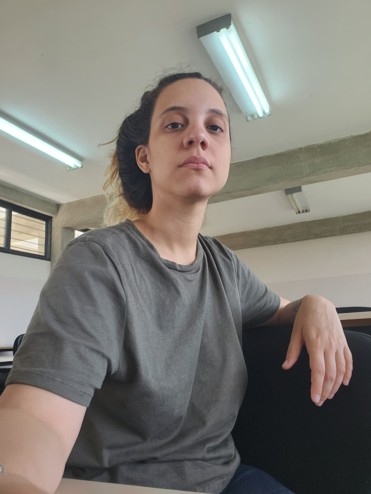
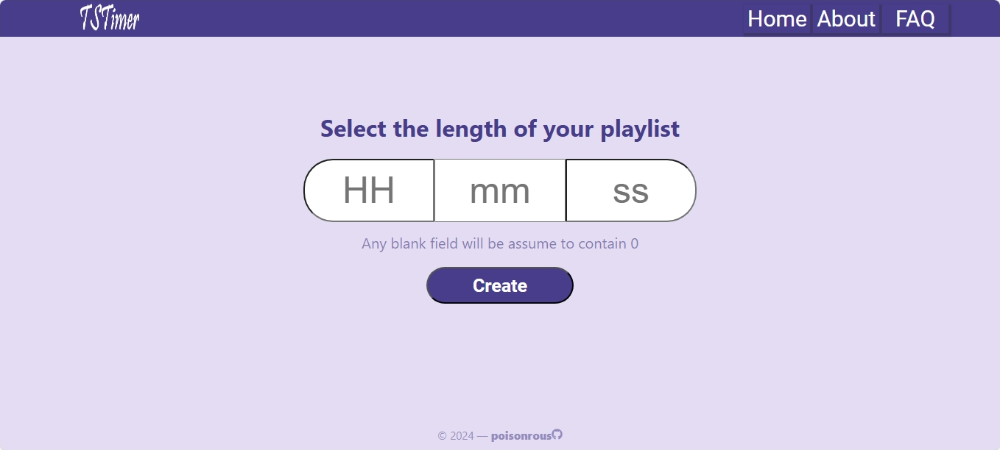
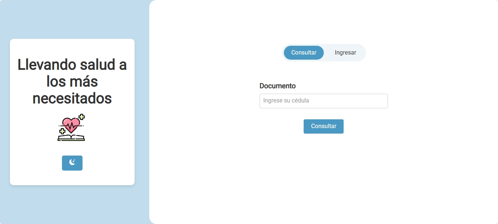
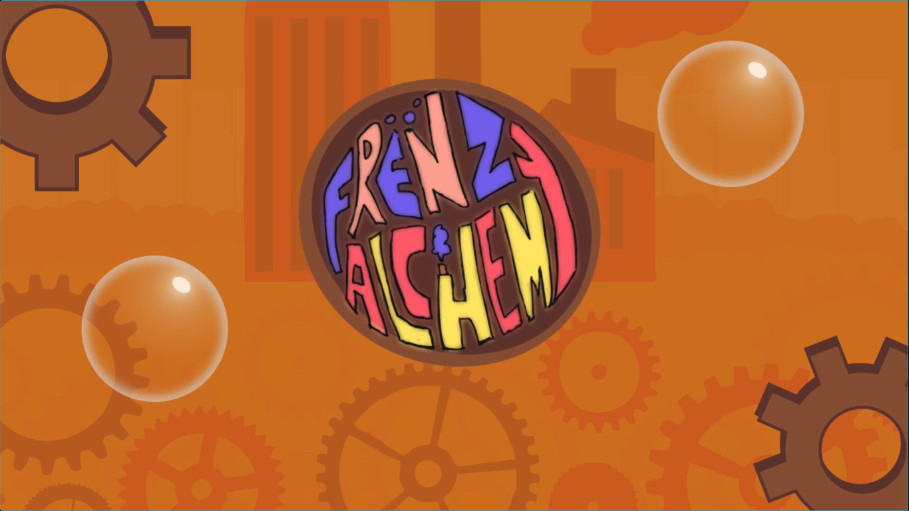
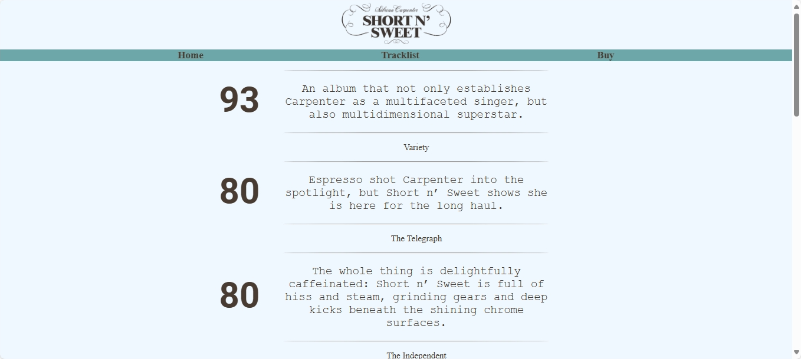

¡Hola!
Mi nombre es Rosalinda Abreu.
Y soy desarrolladora web.
Sobre mí
Me encanta aprender y explorar nuevas herramientas para mejorar mis habilidades. Mi objetivo es aplicar mis conocimientos de programación web en proyectos reales.
Actualmente, estudio Ingeniería Telemática en la Universidad Centroccidental "Lisandro Alvarado", donde he desarrollado una sólida base en tecnologías de la información, redes y programación.
Además de mi experiencia técnica, aprendo y me adapto rápido, y tengo habilidades para la resolución de problemas. Hablo español como lengua materna y tengo un nivel avanzado de inglés (C1), lo que me permite trabajar con equipos internacionales, acceder a documentación técnica y aprender continuamente de diversas fuentes de conocimiento.
Me apasiona la innovación y el aprendizaje constante.

Tecnologías que manejo
HTML5
Maquetación semántica y estructurada para proyectos web modernos.
CSS3
Diseño responsivo, animaciones y estilización avanzada con Flexbox y Grid.
JavaScript
Programación interactiva, manipulación del DOM y desarrollo de aplicaciones dinámicas.
React
Desarrollo de interfaces interactivas y componentes reutilizables con React.
Git & GitHub
Control de versiones, colaboración en proyectos y manejo de repositorios.
Proyectos en los que he trabajado

TSTimer
Esta aplicación permite generar y guardar playlists de una duración especificada por el usuario a partir de canciones de Taylor Swift.
Tech Stack: React, MongoDB, Express, Node, Spotify API
Ver en GitHub
Amigos de Santos Luzardo
Sistema web creado para facilitar la gestión de medicamentos donados a pacientes crónicos en la comunidad de Santos Luzardo. Creado para el Hackathon CCCB 2024.
Tech Stack: React, Vite, DJango, PostgreSQL
Ver en GitHub
Frenzalchemy
Colección de 3 minijuegos con temática de burbujas creadas para la Lara Game Jam 2025.
Tech Stack: Unity, C#
Ver en Global Game Jam
Product Landing Page
Landing page con diseño responsivo para promocionar un álbum musical. Creado como parte de la certificación en diseño responsivo de freeCodeCamp.
Tech Stack: HTML, CSS
Ver en GitHub¡Conéctate conmigo!
Consulta mis proyectos y ponte en contacto.